Un número claro cada día
"Podés gastar hoy" resume tu sueldo, tus gastos fijos y los días que faltan en una sola cifra. No hace falta interpretar gráficos para saber si podés comprar algo.
Alfa · gratis · código abierto
Mirá cuánto podés gastar hoy, ahorrá sin pensar y juntá logros con Finn. Sin cuentas, sin internet, sin que nadie vea tus datos.
Android · Windows


Por qué sirve
La mayoría de las apps de finanzas te piden una cuenta, conectar el banco o pagar una suscripción. AltFin hace lo contrario: es simple, funciona sin internet y es tuya.
"Podés gastar hoy" resume tu sueldo, tus gastos fijos y los días que faltan en una sola cifra. No hace falta interpretar gráficos para saber si podés comprar algo.
Lo que es difícil se abandona. Por eso cargar un gasto lleva segundos, y lo repetitivo (el bus, la merienda) se anota solo.
Elegís un plan (por ejemplo 50 % para ahorrar o 30 %), y la app reparte tu sueldo entre necesidades, gustos y ahorro. Si no querés porcentajes, tampoco son obligatorios.
Finn se alegra con tus rachas y metas, y se preocupa cerca del límite. Los retos sin gasto y los logros hacen que volver cada día sea un hábito.
Guaraníes sin decimales, dólares con tasa de cambio que ponés vos, y textos en español con voseo. Sin pasar por conversiones raras.
Todo queda en tu dispositivo. Sin registro, sin anuncios, sin rastreadores. Podés exportar o borrar todo cuando quieras, y el código está abierto para que cualquiera lo revise.
Lo principal
Un solo número, calculado con tu sueldo, tus gastos fijos y los días que faltan. Sin planillas.
Monto, categoría, listo. En PC, con Ctrl+N.
Te dice cuánto ahorrar por mes y si vas bien.
7 días sin comer afuera. Se evalúan solos y dan XP.
Dividí la cuenta entre amigos, mirá quién le debe a quién y anotá solo tu parte.

Anotá un gasto desde la pantalla de inicio de tu Android.
Plan avalancha o bola de nieve, y cuánto valés de verdad.
Todo vive en una base de datos en tu dispositivo. Bloqueo con PIN o contraseña, huella o rostro, copia de seguridad en un archivo tuyo y exportación a CSV.
Recorrido
Capturas reales de la app funcionando. Deslizá para ver más.
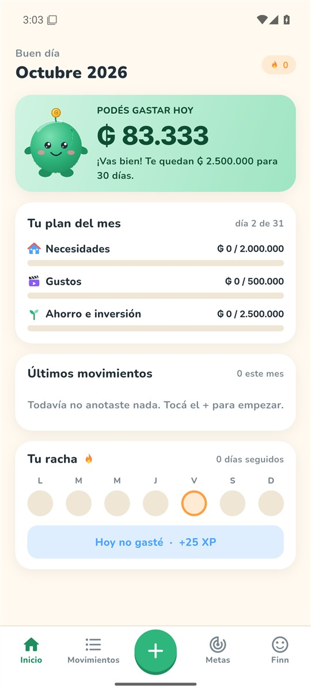
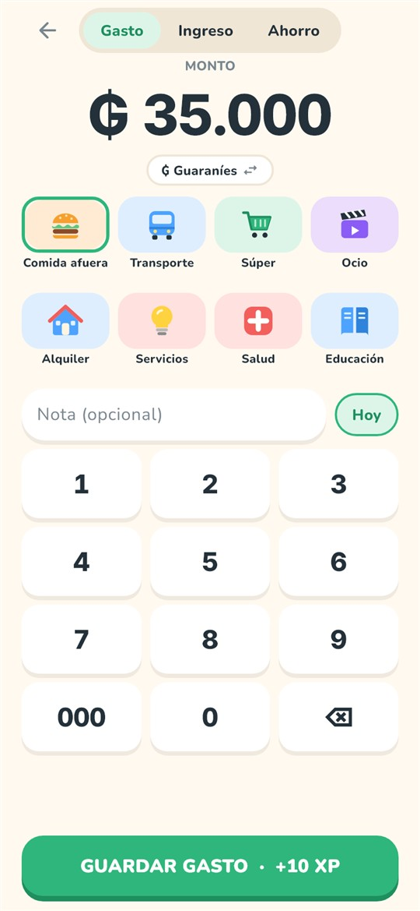
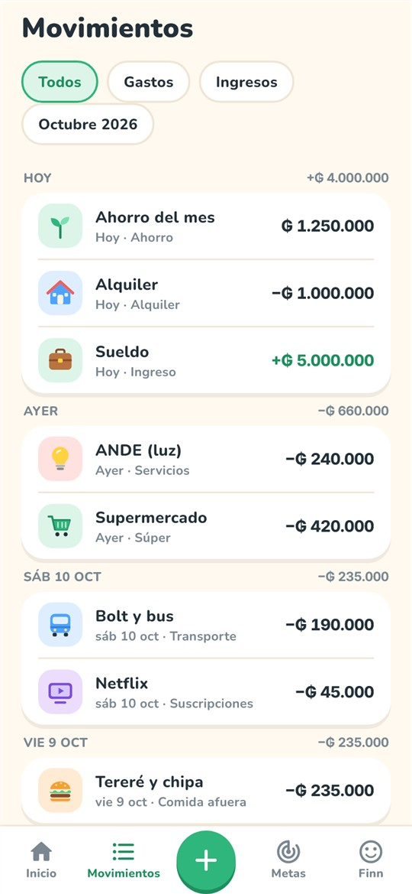
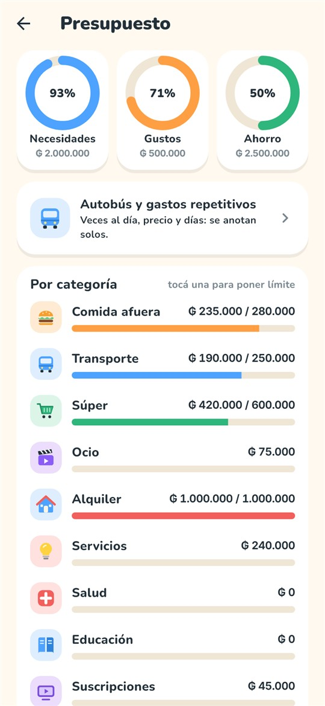
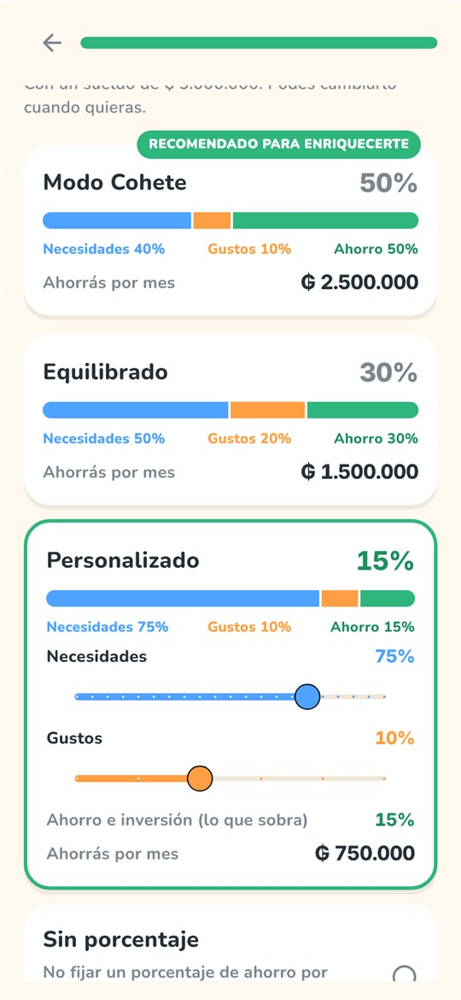
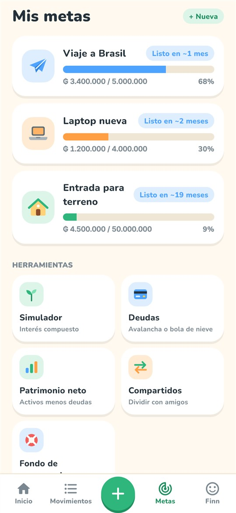
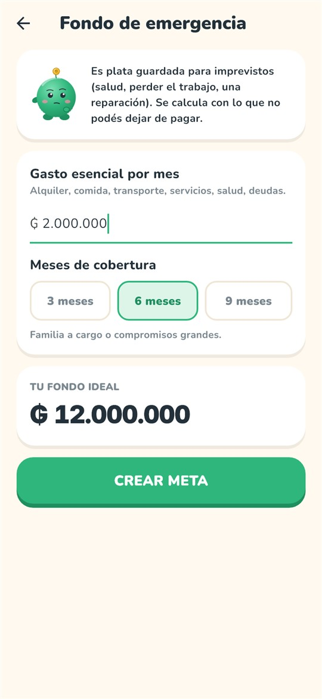
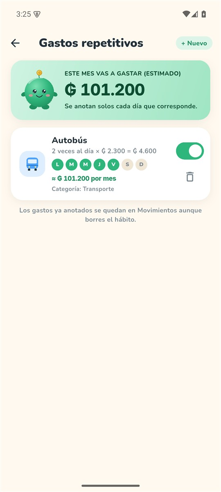
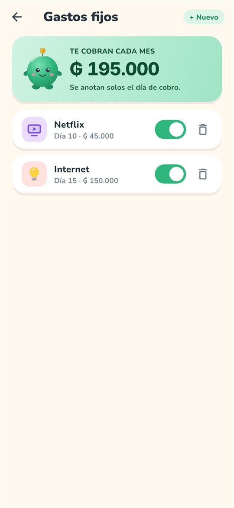
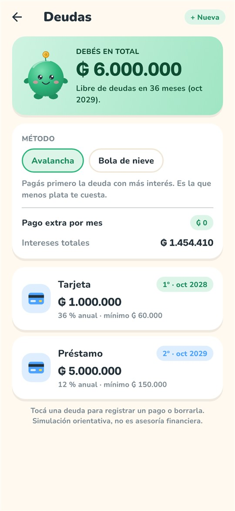
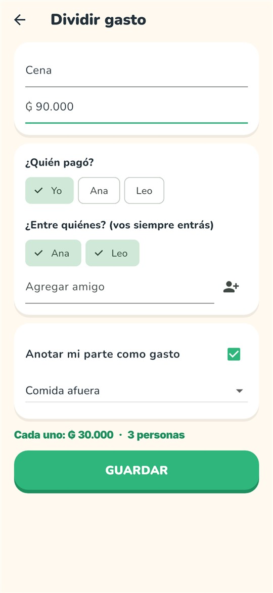
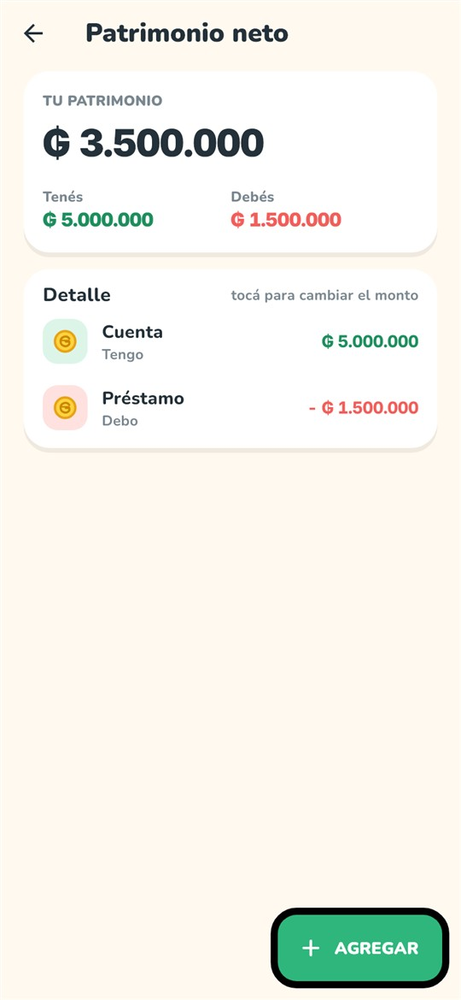
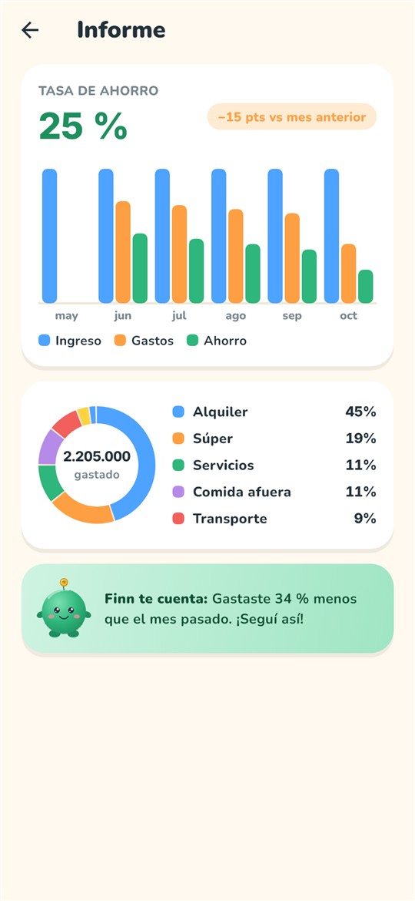
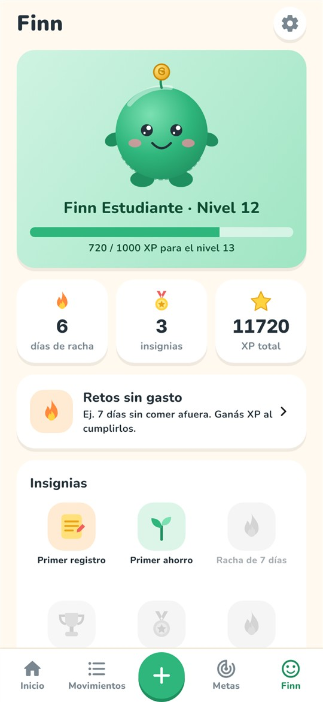
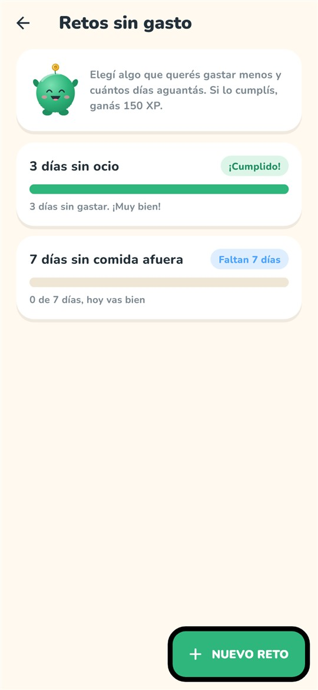
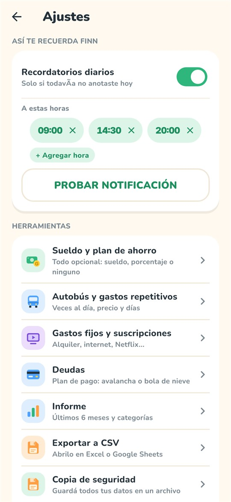
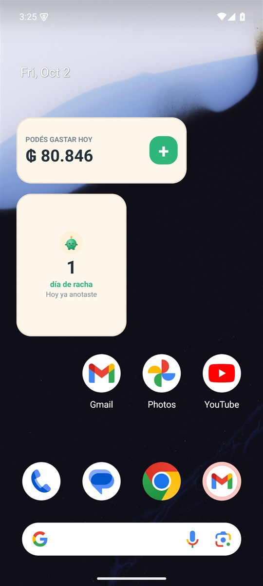
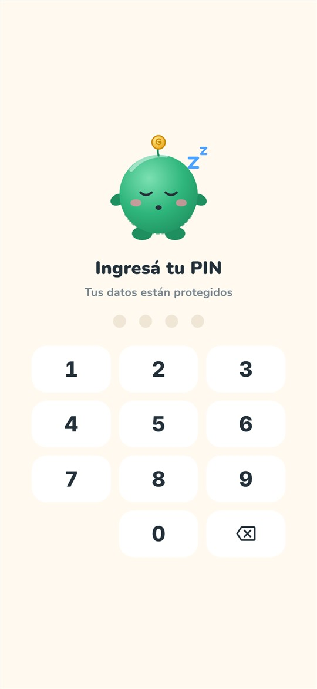
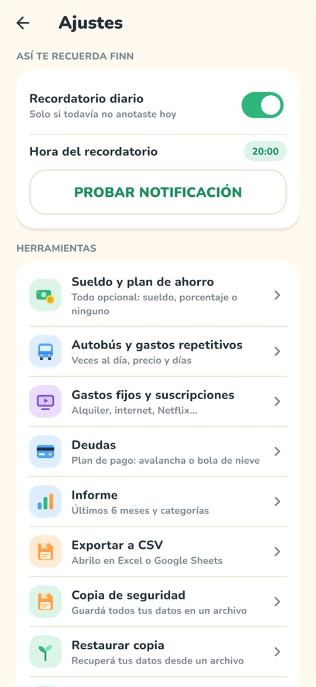
Todo lo que hace
AltFin es una herramienta de orden personal: las simulaciones son orientativas y no son asesoría financiera. Mi balance, los gastos periódicos, la contraseña con huella y los widgets directos llegan con la versión 0.5.0-alfa (en desarrollo); la 0.4.0-alfa publicada todavía no los trae.
Un diseño, dos pantallas


Modo claro y oscuro. Panel de varias columnas en pantallas anchas.
Conocé a Finn
Finn cambia de ánimo según tu presupuesto: feliz si vas bien, preocupado cerca del límite, festejando cuando cumplís una meta. Subí de nivel, juntá racha y desbloqueá insignias.
Sin emojis, sin presión: solo un compañero.

Descargas
Cargando versiones…
Cómo instalar
Va firmada con una clave de prueba: para pasar a una versión nueva hay que desinstalar la anterior. Hacé antes la copia de seguridad en Ajustes.
Windows puede avisar que el editor es desconocido: la app es libre y su código está abierto.
Podés ver todo el código, compilarlo vos mismo o comparar el archivo con el que genera GitHub Actions. Está en GitHub.
AltFin está en alfa: puede haber errores. Hacé copias de seguridad.
Preguntas frecuentes
Es gratis y no hay trampa: sin anuncios, sin planes pagos, sin cuentas. Es un proyecto de código abierto con licencia MIT.
No. Todo funciona sin conexión y tus datos no salen de tu dispositivo. Internet solo se usa para descargar la app.
En una base de datos local de tu celular o tu compu. Para cambiar de equipo, hacés una copia de seguridad en Ajustes y la restaurás en el otro.
No, y es a propósito. Anotás vos lo que gastás. Es más lento que automatizarlo, pero nadie más ve tu plata.
Podés saltear el sueldo y el porcentaje de ahorro al empezar. La app se adapta y podés cargarlos más adelante.
Por ahora no: está para Android y Windows.
Porque todavía está en prueba. La probé en un emulador de Android y en Windows, pero aún no en muchos celulares reales. Hacé copias de seguridad y avisá si algo falla.
En la sección de Issues de GitHub.